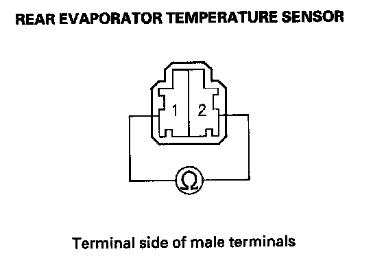
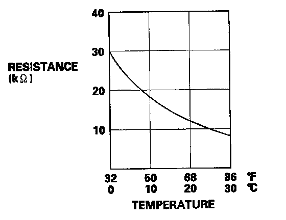

Rear Evaporator Temperature Sensor Test
Rear Evaporator Temperature Sensor Test1. Remove the rear evaporator temperature sensor.

2. Dip the sensor in ice water, and measure the resistance between its terminals.
3. Then pour warm water on the sensor, and check for a change in resistance.

4. Compare the resistance readings with the specifications shown in the graph; the resistance should be within the specifications.
5. If the resistance is not as specified, replace the rear evaporator temperature sensor.